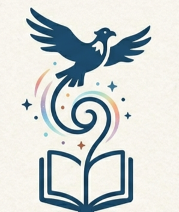
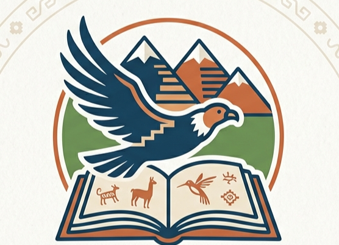
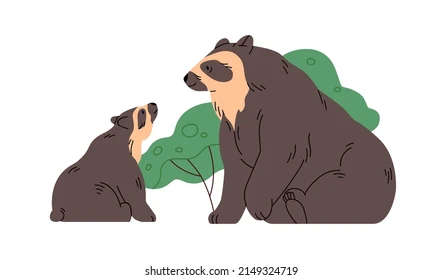

Misión
Somos una editorial independiente dedicada a promover la lectura, fortalecer la identidad cultural y difundir la riqueza de la literatura infantil andina a través de relatos, cuentos y la oralidad ancestral. Asimismo, estamos comprometidos con la construcción de un espacio orientado al estudio, la creación y la difusión de libros infantiles que inviten a reflexionar sobre la memoria cultural, los valores comunitarios, el respeto por la naturaleza y la vigencia de los saberes ancestrales en la actualidad.

Visión
Para el año 2027, consolidarnos como una editorial infantil independiente en crecimiento, dedicada al estudio de la literatura infantil y la creación de libros innovadores, cartoneros y artesanales inspirados en la cosmovisión andina. Buscamos posicionarnos en espacios educativos, ferias y comunidades lectoras mediante publicaciones de calidad que rescaten la oralidad ancestral y fomenten en niños y niñas el amor por la lectura, la identidad cultural y el respeto por la diversidad.

1
Fomentar el hábito lector y fortalecer la identidad cultural en niños, niñas, jóvenes y adultos. A través de nuestras publicaciones, buscamos despertar la imaginación, fortalecer los vínculos con la cultura andina y formar lectores críticos que encuentren en los libros un espacio de reflexión y aprendizaje.

2
Garantizar la calidad de los contenidos y de la presentación física de cada publicación, cuidando el valor literario, estético y material de cada proyecto editorial, para ofrecer libros significativos que generen una experiencia de lectura memorable en los niños, adolescentes y adultos.

3
Diseñar, producir y publicar libros infantiles creativos y artesanales inspirados en la cosmovisión andina, que rescaten y reinterpreten relatos, cuentos y saberes de la tradición oral, convirtiéndolos en experiencias lectoras atractivas en la actualidad.